Problemas resueltos de triángulos rectángulos
1 De un triángulo rectángulo ABC, se conocen a = 415 m y b = 280 m. Resolver el triángulo.
2 De un triángulo rectángulo ABC, se conocen b = 33 m y c = 21 m. Resolver el triángulo.
3 De un triángulo rectángulo ABC, se conocen a = 45 m y B = 22°. Resolver el triángulo.
4 De un triángulo rectángulo ABC, se conocen b = 5.2 m y B = 37º. Resolver el triángulo.
5 De un triángulo rectángulo ABC, se conocen a = 5 m y B = 41.7°. Resolver el triángulo.
6De un triángulo rectángulo ABC, se conocen b = 3 m y B = 54.6°. Resolver el triángulo.
7 De un triángulo rectángulo ABC, se conocen a = 6 m y b = 4 m. Resolver el triángulo.
8De un triángulo rectángulo ABC, se conocen b = 3 m y c = 5 m. Resolver el triángulo.
9 Un árbol de 50 m de alto proyecta una sombra de 60 m de larga. Encontrar el ángulo de elevación del sol en ese momento.
10 Un dirigible que está volando a 800 m de altura, distingue un pueblo con un ángulo de depresión de 12°. ¿A qué distancia del pueblo se halla?
11 Hallar el radio de una circunferencia sabiendo que una cuerda de 24.6 m tiene como arco correspondiente uno de 70°.
12 Calcular el área de una parcela triangular, sabiendo que dos de sus lados miden 80 m y 130 m, y forman entre ellos un ángulo de 70°.
13 Calcula la altura de un árbol, sabiendo que desde un punto del terreno se observa su copa bajo un ángulo de 30° y si nos acercamos 10 m, bajo un ángulo de 60°.
14 La longitud del lado de un octógono regular es 12 m. Hallar los radios de la circunferencia inscrita y circunscrita.
15 Calcular la longitud del lado y de la apotema de un octógono regular inscrito en una circunferencia de 49 centímetros de radio.
16Tres pueblos A, B y C están unidos por carreteras. La distancia de A a C es 6 km y la de B a C 9 km. El ángulo que forman estas carreteras es 120°. ¿Cuánto distan A y B?
Problemas resueltos de triángulos acutángulos y obtusángulos
- 1
- 2
- 3
- 4
- 5
- 6
- 7
- 8
- 9
- 10
- 11
- 12
- 13
- 14
- 15
- 16
Ejercicio 1 resuelto
De un triángulo rectángulo ABC, se conocen a = 415 m y b = 280 m. Resolver el triángulo.

sen B = 280/415 = 0.6747 B = arc sen 0.6747 = 42° 25′
C = 90° - 42° 25′ = 47° 35′
c = a cos B c = 415 · 0.7381 = 306. 31 m
Ejercicio 2 resuelto
De un triángulo rectángulo ABC, se conocen b = 33 m y c = 21 m. Resolver el triángulo.

tg B = 33/21 = 1.5714 B = 57° 32′
C = 90° - 57° 32′ = 32° 28′
a = b/sen B a = 33/0.5437 = 39.12 m
Ejercicio 3 resuelto
De un triángulo rectángulo ABC, se conocen a = 45 m y B = 22°. Resolver el triángulo.

C = 90° - 22° = 68°
b = a sen 22° b = 45 · 0.3746 = 16.85 m
c = a cos 22° c = 45 · 0.9272 = 41.72 m
Ejercicio 4 resuelto
De un triángulo rectángulo ABC, se conocen b = 5.2 m y B = 37º. Resolver el triángulo.

C = 90° - 37° = 53º
a = b/sen B a = 5.2/0.6018 = 8.64 m
c = b · cotg B c = 5.2 · 1.3270 = 6. 9 m
Ejercicio 5 resuelto
De un triángulo rectángulo ABC, se conocen a = 5 m y B = 41.7°. Resolver el triángulo.

Ejercicio 6 resuelto
De un triángulo rectángulo ABC, se conocen b = 3 m y B = 54.6°. Resolver el triángulo.


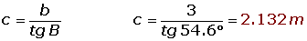
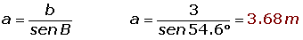
Ejercicio 7 resuelto
De un triángulo rectángulo ABC, se conocen a = 6 m y b = 4 m. Resolver el triángulo.

Ejercicio 8 resuelto
De un triángulo rectángulo ABC, se conocen b = 3 m y c = 5 m. Resolver el triángulo.

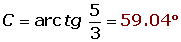

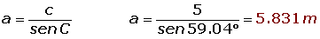
Ejercicio 9 resuelto
Un árbol de 50 m de alto proyecta una sombra de 60 m de larga. Encontrar el ángulo de elevación del sol en ese momento.
Ejercicio 10 resuelto
Un dirigible que está volando a 800 m de altura, distingue un pueblo con un ángulo de depresión de 12°. ¿A qué distancia del pueblo se halla?

Ejercicio 11 resuelto
Hallar el radio de una circunferencia sabiendo que una cuerda de 24.6 m tiene como arco correspondiente uno de 70°.

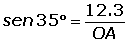
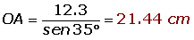
Ejercicio 12 resuelto
Calcular el área de una parcela triangular, sabiendo que dos de sus lados miden 80 m y 130 m, y forman entre ellos un ángulo de 70°.

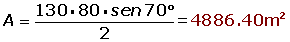
Ejercicio 13 resuelto
Calcula la altura de un árbol, sabiendo que desde un punto del terreno se observa su copa bajo un ángulo de 30° y si nos acercamos 10 m, bajo un ángulo de 60°.

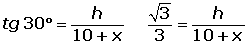
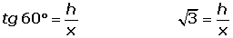
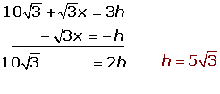
Ejercicio 14 resuelto
La longitud del lado de un octógono regular es 12 m. Hallar los radios de la circunferencia inscrita y circunscrita.


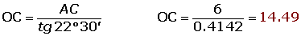
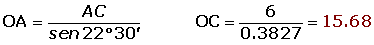
Ejercicio 15 resuelto
Calcular la longitud del lado y de la apotema de un octógono regular inscrito en una circunferencia de 49 centímetros de radio.

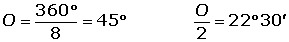
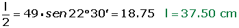
Ejercicio 16 resuelto
Tres pueblos A, B y C están unidos por carreteras. La distancia de A a C es 6 km y la de B a C 9 km. El ángulo que forman estas carreteras es 120°. ¿Cuánto distan A y B?

 Ejercicios
Ejercicios